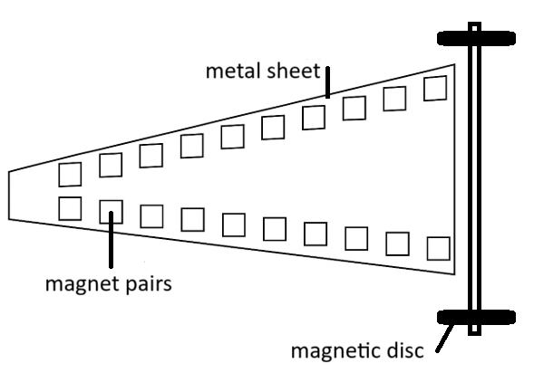

IYPT 2026 Problems
Problems for the 39th IYPT 2026
Approved by the IOC on 7 July 2025
Problems for the 39th IYPT 2026
1. Invent yourself
A self-starting siphon can be made using a piece of rigid tubing bent into a specific shape. When the siphon is partially immersed in water, it begins siphoning water without the need for initial suction. Investigate how the relevant parameters, such as the geometry, affect the siphoning process.
2. Electrical damping
A magnet suspended by a spring will display simple harmonic motion when displaced. If the magnet oscillates within a coil connected to a resistor, its motion will be damped. Investigate the factors that affect the damping.
3. Ring fountain
When a flat metal ring falls from a certain height into a water tank, it generates a fountain that can shoot water high into the air. How does the maximum height of the fountain depend on the ring’s parameters?
4. Oil flow
A thin layer of cooking oil on a flat metal surface flows outwards when heated. Investigate the phenomenon and its dependence on relevant parameters.
5. Elastic wave dynamics
Suspend a metal ball from a fixed support using a rubber band and twist it many times around its vertical axis. When the ball is released, standing waves are formed on the rubber band. Investigate this phenomenon and study how the wave depends on relevant parameters.
6. Flipo Flip
A Flipo Flip toy can roll for multiple turns even though its shape is not circular. Investigate how its motion depends on parameters such as geometry and the initial release conditions.
7. Tennis racket theorem
When an object with different principal moments of inertia about each axis is thrown while it rotates, it can suddenly start rotating around an axis different from the one it was initially rotating about. Investigate how the rotational motion of such an object is affected by relevant parameters during its free fall.
8. Magnetic accelerator
Fix magnets in pairs onto a metal sheet as shown. If you attach two magnetic discs onto an axle this “vehicle” will accelerate over the rows of magnets under certain conditions. Investigate the phenomenon.

9. Levitation control
When arranged in a specific configuration, small graphite sheets can levitate on neodymium magnets. By shining light onto the surface of the graphite sheet, it is possible to control its movement. Explain and investigate the phenomenon.
10. Submerged crater
If you release sand or similar granular material in a container filled with water, the material will sink to the bottom and may form a crater-like structure. Explain and investigate the phenomenon.
11. Sweet monochromator
Pass linearly polarised white light through a column of sugar solution. When transmitted light is observed through a polariser it may appear coloured. Rotate the polariser, and the transmitted light colour may change. Construct such a sweet monochromator and optimise for the narrowest light wavelength bandwidth.
12. Autumn coin
The motion of a coin falling to the bottom of a tank filled with liquid can be remarkably similar to the fluttering and tumbling of a falling autumn leaf. Investigate how the motion of the coin depends on relevant parameters.
13. The singing ruler
When a ruler is clamped at one end and struck, it oscillates and emits a characteristic sound. Investigate how the sound depends on relevant parameters.
14. Crystal Critters
Observe the evaporation of a drop of table salt solution on a warm hydrophobic surface. After the water evaporates, a variety of characteristic crystal shapes remain. Research and explain this phenomenon.
15. Magnetic Newton’s cradle
Repulsing, non-touching magnets are used instead of colliding balls to make a new type of Newton’s cradle. The new cradle can act in a similar way to a regular cradle, but can also exhibit other interesting behaviour. Explain and study the movement of this magnetic cradle.
16. Twisted spaghetti
When a bundle of spaghetti is twisted, it might withstand higher transverse (side) forces than a straight, untwisted bundle. Investigate the response of a twisted bundle to transverse stress and identify the optimal twist that maximises tolerance to transverse stress.
17. Travelling flame
A flame can propagate continuously around a ring-shaped trough containing a thin layer of flammable liquid. Investigate how the characteristics of this travelling flame depend on relevant parameters.
Submitted by:
Mirkin Alex, Yuchong Chen, Jim Chen, Nikita Chernikov, Falk Ebert, Sam Edgecombe, Ivan Guilhon, Kent Hogan, Karel Kolář, Heiko Krabbe, Amanda Leung, Fabricio Marques, Ilya Martchenko, Irakli Mirotadze, Rusheen Sal Nuthalapati, Zixuan Peng, FelixWechsler.